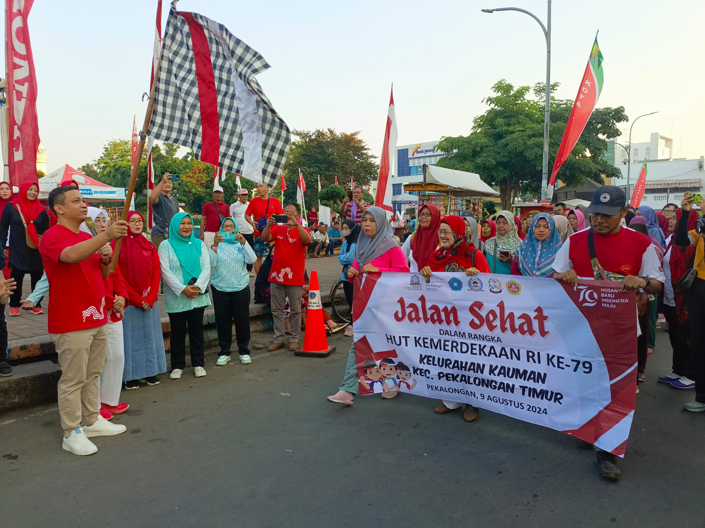
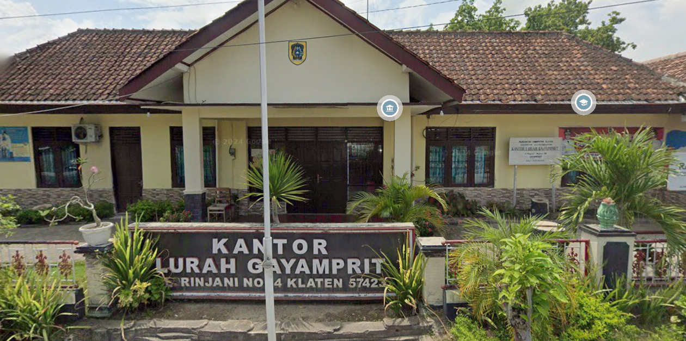
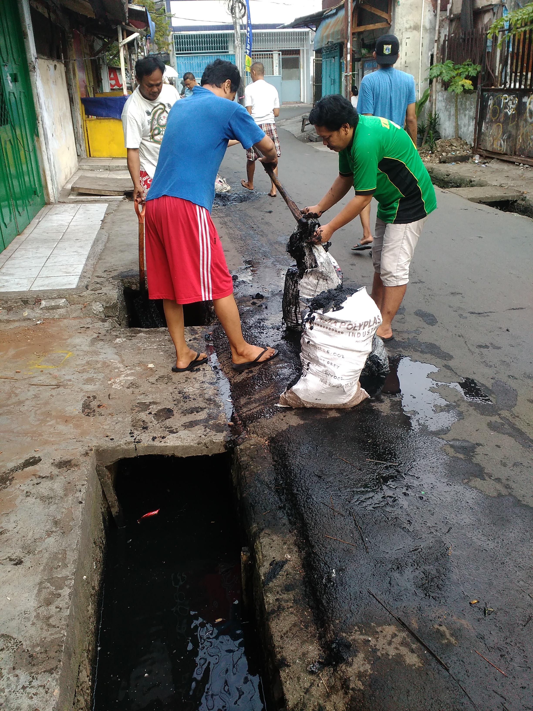
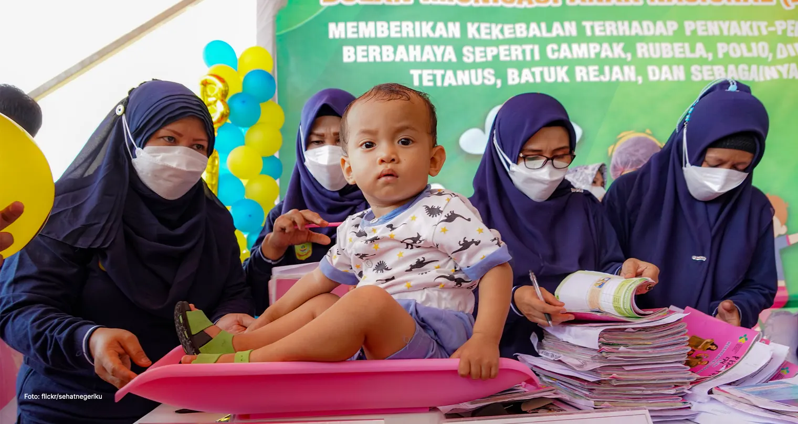

Galeri Kelurahan Gayamprit
Dokumentasi Kegiatan & Fasilitas
Foto & Dokumentasi
Klik foto untuk melihat lebih besar.




Melayani Masyarakat dengan Cepat dan Ramah
Dokumentasi Kegiatan & Fasilitas
Klik foto untuk melihat lebih besar.



